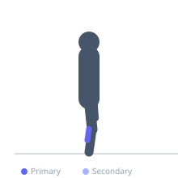

Exercise guide / Single-Leg Calf Raise on Step — Full Range
Single-Leg Calf Raise on Step — Full Range
A single-leg calf raise performed on the edge of a step, allowing the heel to drop below the step surface for full dorsiflexion at the bottom and full plantarflexion at the top. This full range of motion is essential for Achilles tendon rehabilitation and maximal calf strength development. The eccentric (lowering) phase is of particular therapeutic value — the classic Alfredson protocol for Achilles tendinopathy uses this exact movement pattern with progressive loading.
Primary muscles
gastrocnemius medial
gastrocnemius lateral
Secondary muscles
soleus
Equipment
No Equipment (Bodyweight)


Starting position
- Stand on the edge of a step with the ball of one foot on the edge and the heel suspended in the air. Hold a railing or wall for balance. Keep the other foot off the step or cross it behind the ankle.
Setup
- Use a stair step, aerobic step, or dedicated calf raise block. Ensure the step is stable and non-slip. For Achilles tendinopathy rehab, perform BOTH straight-leg (knee extended) and bent-leg (knee slightly bent) variations.
Steps
- Step 1: Begin with the heel at the level of the step, in a neutral position.
- Step 2: Lower the heel as far as the ankle allows, achieving maximum dorsiflexion (a deep stretch in the calf).
- Step 3: Press up through the ball of the foot to full plantarflexion (highest toe-rise position).
- Step 4: Lower slowly and under control back to the deep stretch position. Repeat.
Coaching cues
- Slow the lowering — count to 4 on the way down
- Full range is what makes this exercise therapeutic — do not shortcut the bottom stretch
- Touch the wall for balance only — do not push through it
Breathing
- Inhale at the bottom (stretch). Exhale as you rise. Inhale as you lower.
Range of motion
- Full range: heel drops as far below the step as the ankle allows; rises as high as full plantarflexion permits.
Tempo
- 1s up, 1s top hold, 3-4s eccentric lowering (slow eccentric is the therapeutic element)
Common mistakes
- Partial range of motion — not letting the heel drop to full dorsiflexion
- Rushing the eccentric (lowering) phase — the eccentric is the most therapeutic component
- Using the hand on the wall to assist with the raising phase — touch for balance only
Safety
- For active Achilles tendinopathy: perform eccentric-only (rise with both feet, lower with one) until pain allows full concentric reps
- If sharp pain occurs at the tendon during the exercise, reduce range or load and consult a physiotherapist
- This exercise must not cause pain above a 3/10 on a pain scale in a clinical rehabilitation context
Training
- endurance: 10–15 reps
- strength: 6–10 reps
- endurance: 2–3 sets
- strength: 2–3 sets
- Rest: {'endurance': 60, 'strength': 90}